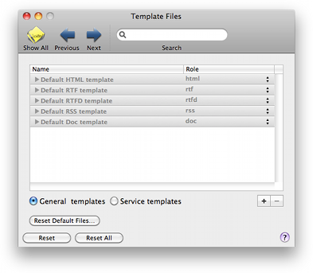

Templates Templates
Templates TemplatesUsing the Templates preference pane you can customize the templates that BibDesk uses for export to various other file formats and for some Services menu items.
See Appendix Template Tags for more information about template files.

Templates: In the table you can view and change the templates. In the right column you can choose the file type for the template, which will be used for the extension of the exported file.
Each template has one or more files associated to it. They are shown when you click on the triangle
to the left of the template name. The right column for the files shows the role of the file in the template parsing.
Each template should have at least a Main Page template, which is the main template file used to export
all the publications. Optionally, there can be additional template files used for the individual publications.
These are only used when the Main Page template file contains a template tag for publicationsUsingTemplate.
In this case, there should be at least a template file with role Default Item. You can add separate item
template files that are used for publications of a particular type, such as book.
Furthermore you can add any number of Accesory Files, which are saved together with the exported file.
For example, this could be a separate .css style sheet file for an HTML export.
You can add new templates and new template files using the "+" button. Templates and template files can be removed using the "-" button.
To change the file used for the template, double-click on the name of the file you want to change, and you will be presented with a dialog to choose a file in your file system. You can view or edit a template file using the contextual menu. Control-click (or right click) on the file name.
Export templates / Service templates: Choose if you want to see the templates used for the Export menu or for the Services menu.
Reset Defaults Files: You can reset the default export and service template files to their original content by clicking this button. Be careful though, as you can not undo this action.